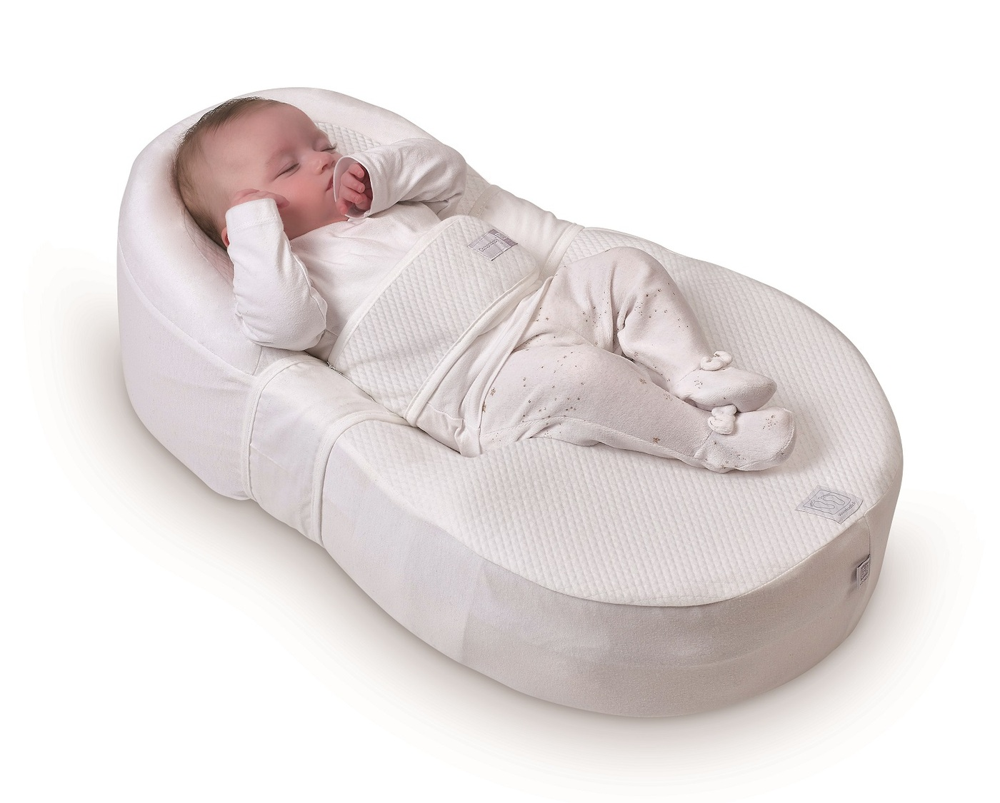
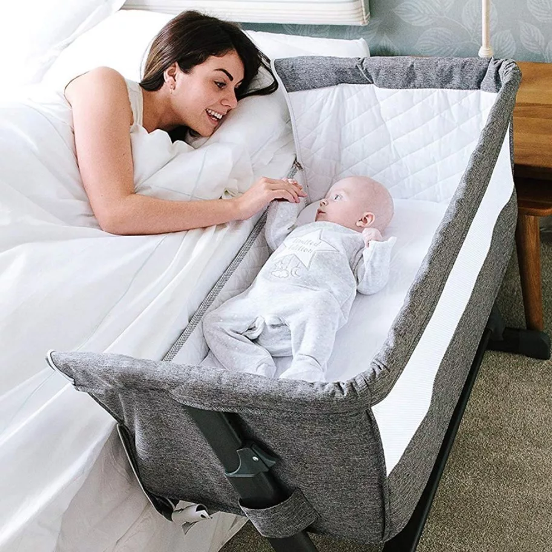
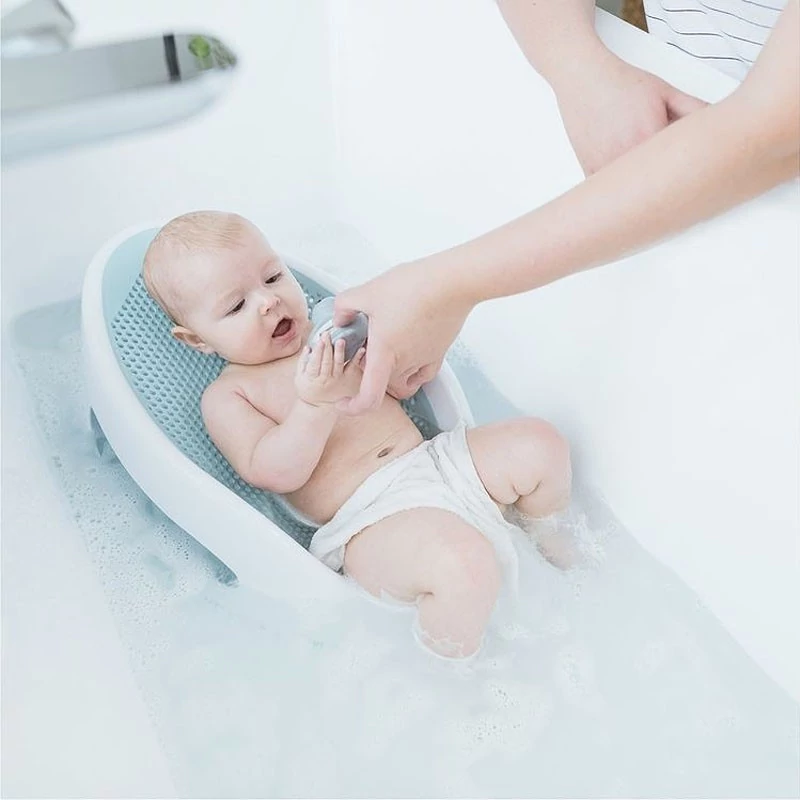
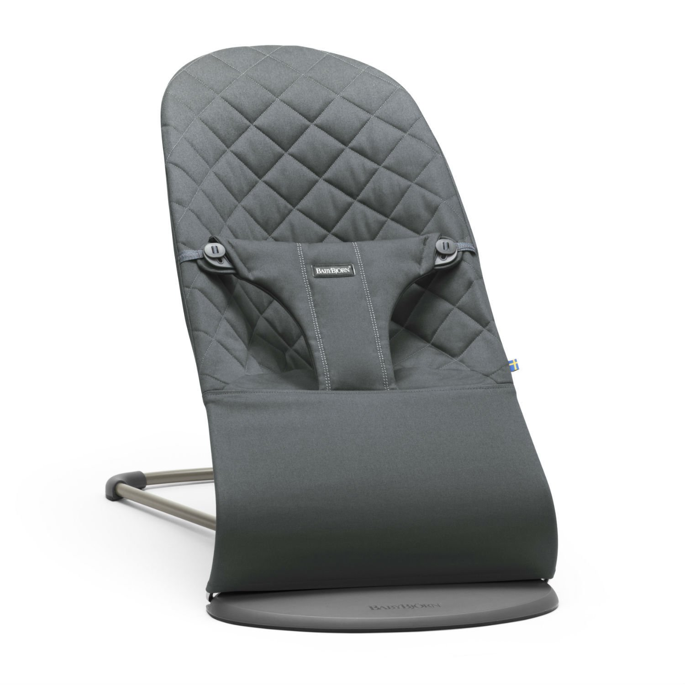
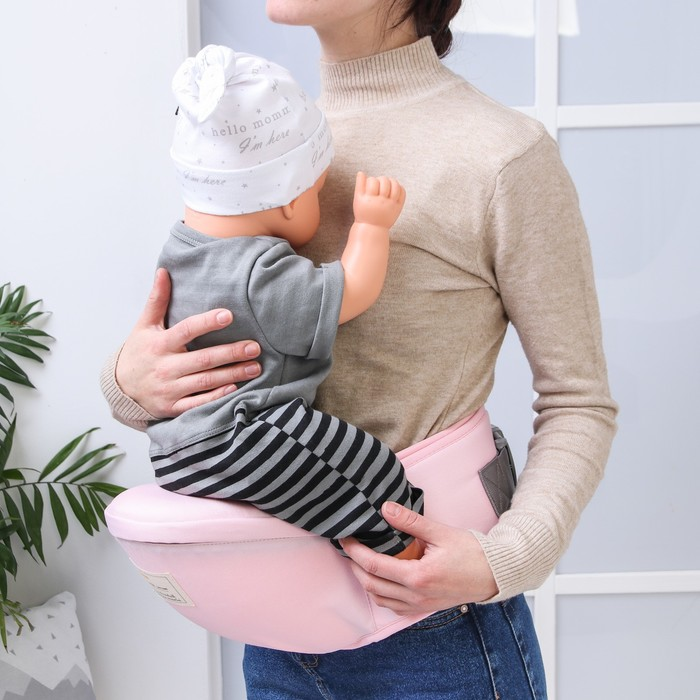

Подготовка к материнству

Общие вводные:
- Заблаговременно (месяца за 3 до зачатия или за год) пить фолиевую кислоту, можно просто её пить на всякий случай.
- Посетить гинеколога: сдать анализы, узи.
- Пройти check-up организма (обязательно зубы, кровь: свертываемость, норма магния, витамина Д, железа).
- Накопить денег на няню, а лучше подушку безопасности на 1,5-2 года.
- Узнать про все пособия (работодатель, государство).
- Узнать в детской поликлинике про курсы подготовки к родам и материнству.
- Посетить психолога (проработать воспоминания первых родов).
- На 36-ой неделе выбрать врача, принимающего роды, роддом (день открытых дверей, экскурсия) и договориться.
- Заранее продумать с родственниками кто и как будет помогать с малышом, с готовкой, уборкой и первым ребёнком.
- Посмотреть курсы: как ухаживать за младенцами (забывается), малышковый фитнес, купание, воспитание и т.п. (Игорь Новокрицкий, Валентина Паевская, Марина Романенко).
- Авито в помощь покупкам.
Предпочтительные периоды зачатия, учитывая свой цикл и срок родов:
- Близнецы в середине сентября до 20числа
- Стрелец в середине марта до 21го числа
- Козерог в середине апреля до 19го числа
- Водолей в середине мая до 19го числа
- Рыбы в середине июня до 18го числа
Спальное место:
- Кокон для новорожденных. С 1го мес до 3х мес (не жадничай - купи, хоть и на 3мес. пригодится!)

- Кроватка приставная

- Ночник от книжки
- В комнате темно и тихо, прохладно. Термогигрометр
- Самозасыпание физиологично только 2,5-3,5 года и далее по ребёнку.
- Дети просыпаются ночью в силу незрелой нервной системы, готовы спать всю ночь ближе к 2,5-3,5 годам.
- Сон считать норму сна за весь день/ночь по возрасту(вести дневник).
Грудное вскармливание (ГВ):
- ГВ до 2х лет дальше по желанию. Легче всего отлучается после 2х.
- Посмотреть скриншоты/статьи/курсы про правильное прикладывание.
- Возраст 1,1-1,4 сепарационная тревога, часто висит на груди.
- Вести дневник (периоды, время).
Девайсы:
- Горка для купания AngelCare (грудничка первых месяцев кутать и обмывать в пеленочку).

- Коляска Joolz day + , но тут надо подумать из-за цены, т.к. в 1г уже на прогулочную коляску точно переходить joolz aer может быть. Может стоит рассмотреть люльку отдельно, затем прогулочную.
- Коляска-автолюлька Doona. Спорно и хз, как по нашим дорогам(то же подумать).
- При покупке коляски взять с собой ортоковрик, чтобы проверить проходимость кочек и ливнёвок.
- Шезлонг BabyBjorn(этот можно с рождения) или другой

- Накидка для кормления грудью в общественном месте
- Башня помощник. Спорно, надо думать. В первый раз и без неё прекрасно было.
- Хипсит (сидение для ношения на руках на улице) или рюкзак, но там фирма определённая что-то на m

- Слинг из ткани. Посмотреть, как пользоваться.
- Видео-няня с трансляцией на отдельное устройство, а не на телефон.
Прикорм:
- Стул для кормления сразу растущий с ограничителями ( движение жизнь или @detalsmarket, stokke triptrap, подходит ли на стул baby set stokke - это ограничитель и доп.спинка покупается отдельно)
- Вводить сразу кусочками. Просто для мягкости раздавить вилкой.
Физическое развитие:
- Бассейн (грудничковое плавание).
- Горка Пиклера, радуга/Шведская стенка.
- Граспи деревянный тренажёр + набор мобилей (от 3х недель до 6 месяцев)
Горшок:
- С рождения изучить вопрос высаживания.
- Засекать по времени через сколько писает.
- Вести дневник.
Прививки:
- До 3-4х месяцев не ставить ни одной. Идёт активное развитие мозга. Далее по списку прививок.
- Ставить так, если у малыша появился новый навык
(гуление, перевороты, пополз, сел, встал, начал говорить и т.д.),
то отсчитываем 2 недели (время на закрепление навыка), смотрим общее состояние и тогда ставим прививку.
Как себя вести после родов:
- Постоянно спать (даже без повода).
Это поможет быстрее восстановиться организму и нервной системе, а также снизит влияние гормонов.
- Делегировать ВСЁ, что можно делегировать.
- Дать себе отдохнуть месяц точно, а лучше три.
- Просить о помощи.
- Подстричь волосы (каре или по плечи): всё равно за период ГВ отрастут ещё 5 раз.
При такой нагрузке удобнее с короткими волосами, плюс к 4 месяцу начнут выпадать, меньше убирать.